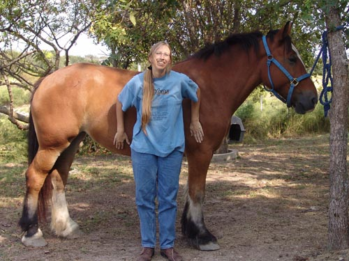
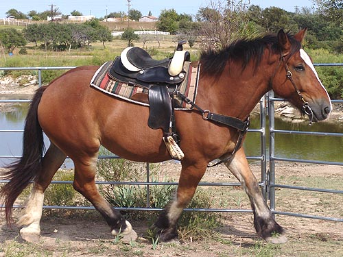
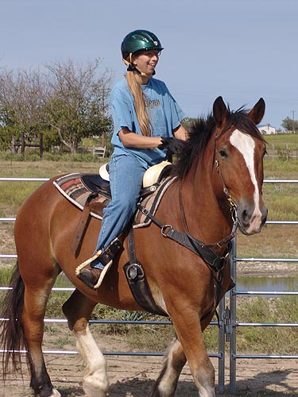
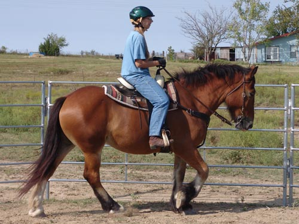
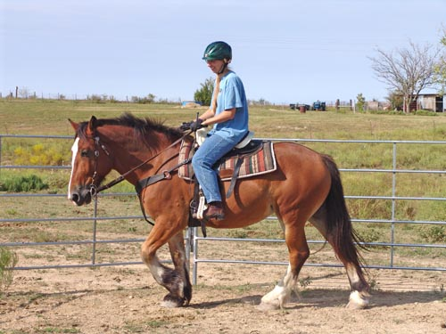

I haven't decided if we will think of a
name for her, or
if we'll go with the one she came with.
Her coggins says
Fancy, and that really doesn't fit....
Here are the pictures trying her out.

She's very huggable. At 15.2
and with her movement I consider her a heavy Cob type (of course if she
shoots up and gets more bulk then she'll be more a draft type).

She rounds up better with a
rider, but still it's nice to see how she reaches out at the trot. She
does soften to the bit a little, but I'll probably put her on the lungeline
with side reins to encourage a little more flex at the trot.

I'm not used to the Western
saddle, but quite secure for a test ride.

Off the curb (we put it up after
a few rounds), she flexes nicely and still reaches under with her hind
end. She might be cute in the dressage ring.

Here, off the snaffle, she reaches
more forward into the bridle and we get a better length of neck. She's
got a lot to learn, but I think she'll be fun to train.